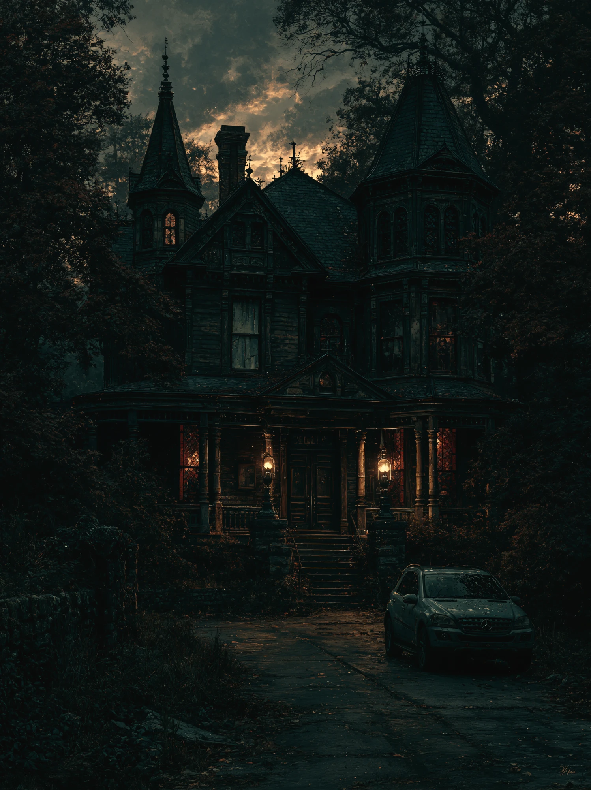

| Name | Era | Role | Key Detail |
|---|---|---|---|
| Anthony “Chase” Singleton | 2026 | Father, modern protagonist | Husband of Brittany. Brother of Nicole. Doesn’t believe in inherited gifts. |
| Brittany (Wetherbee) | 2026 | Mother, bloodline carrier | Ice blue eyes. Maiden name on the old oak chair. Found at a yard sale for $40. |
| Carter Singleton | 2026 | The marked child | Born Oct 13 under comet. Immune to fire. Ancient brown eyes. Says “Fire” — first real word. |
| Nicole “Stevie” | 2026 | Researcher, pattern tracker | 8 months investigating. 14 cultures, same entity. Fibonacci. “It’s killing kids, Chase.” |
| Archie / Šúŋka Wa | 2026/1859 | Wolf dog, spiritual guardian | One ice blue eye. Watches the empty chair. Sees Orbus. The reader sees this; Carter doesn’t. |
| Britannia Wetherbee | 852 AD | First documented vessel | Drew a full war bow at age 9. Killed Ulfric. Marie recognized the gift. |
| Marie | 852 AD | Elder, keeper of the secret | Turned away from the gift in her youth. Waited for “there she is.” |
| Carter Walks-With-Fire | 1842 | Historical vessel | Born Oct 13, 1842 under comet. United Blue Wolf nation. Orbus in both photos, 165 years apart. |
| Kata / Carter (1859) | 1859 | Young Carter (same soul arc) | “The white man’s orphan.” Half Wolf. Raised by Ten Bears. Crown in blood. |
| Roxy / Rochaki | 1859 | Carter’s mother | Blue Wolf People. Died taking arrow for Carter. “Burn bright, my fire.” |
| Ten Bears | 1859+ | Blue Wolf chief, adoptive elder | 13 braids. Patience = survival. Will die at Red Wedding event. |
| Wind At His Back | 1859+ | Rival → first sworn wolf | Wanted his 13th braid. Carter’s Jamukha. United through shared loss. |
| Blood On His Claws / Koda | 1859 | Antagonist | Roxy’s brother’s sworn Blood Wolf. Led raid. Killed by Carter’s thrown knife. |
| Orbus the Bereft | All eras | The ancient entity | 14 names. From the Oort Cloud. Not evil — hungry. Not will — gravity. |
| Cole Fenton | Multiple | Orbus’s servant | Delivers gifted ones. Can’t stop himself. On his knees in the dirt. |
| Charlotte | 2026 | Nicole & Anthony’s aunt — Orbus’s unwitting archivist | Retired child psychiatrist. Dementia. Magnolia Grove, Room 313. Kept records of gifted children for 40 years without knowing why. Her scrapbook is the key. |
| Blood On His Claws | 1842 | Blue Wolf warlord — Ten Bears’ former Blood Wolf | Brutal. Respected for violence. Did something unforgivable in his youth that ended his bond with Ten Bears. His raid killed Roxy. He brought Kata in a collar. |
| Ten Bears | 1842 | Medicine man — former warlord | Thirteen braids. Silver hair since boyhood. Modeled on Chase’s father Donald. Sister: Rochaki. Calls Orbus “the Wendigo.” Same medicine line as the hibachi chef. |
| Spotted Horse | 1842 | Blue Wolf second rank — challenger | Fourteen. Two kills. Disqualified once for blading a submitted boy. Challenges Kata at Wolf Moon. Loses his eye in one strike. His screaming carries through the chapter. |
| Brittany’s Mother | 2026 (backstory) | Wetherbee woman — broken by what she carried | Single mother. Started seeing things when Brittany was young. Eyes went wrong one night — said Brittany would bear the prince promised from beyond the stars. Killed herself at fifteen. Opposed Brittany with Anthony. This is how the reader first learns what Anthony is. |
| Knox | 1842 | Carter Walks-With-Fire’s father | Full-blooded white man. Almost-black STRAIGHT hair. Doesn’t know his son is alive. His journey east toward Tennessee is its own arc. Bloodline echo to Anthony. |
| Rank | How Earned | Marks |
|---|---|---|
| Wolf | Age 10 | One paw print. One claw mark. |
| Blue Wolf | Age 16 | Two paw prints. Two claw marks. |
| Blood Wolf | Chief brands cheeks himself. | Red brands. Permanent. |
| True Wolf | Not earned. Not given. Arrived. | Three claw marks. The nation bows. |
| Patch Hunters | Cut their own brands publicly. | Many chose death instead. |
| Section | Placement | Notes |
|---|---|---|
| The Ancient Family Watching the Sky | New Ch. — opens book | Pre-Göbekli Tepe. Caramel-skinned man, mammoth coat. Family watches meteor shower. The comet that doesn’t burn up. Mountain of water at 450 mph. Silence on day three. |
| The Göbekli Tepe Chapter | New Ch. — 9600 BC | Medicine man builds the Book by starlight. Three days. Obsidian and skin. Breathes light into cover. Skin burns. He holds on. Runs from the darkness behind the wolf stone. |
| Brittany Chapter One — The Drawings | Early modern timeline | Young Brittany walking past the Victorian house on her way to school. Drawing the chair over and over. Never been inside. Never seen it up close. Gets it exactly right every time. |
| Brittany Chapter Two — Her Mother’s Worst Night | Brittany age 8-9 | Eyes wrong. Voice wrong. The prince from beyond the stars. Blinks back. Holds Brittany. Cries. Never speaks of it again. |
| Brittany Chapter Three — After | Brittany age 15 | Mother’s death. Moving in with the judge and his wife. The house. The chair in the sunroom. Exactly where she always drew it. |
| Brittany Chapter Four — The Realtor | Before Anthony moves in | He called her specifically. She never signed up for any list. Something off about him. Can’t describe his face afterward. Just the eyes. Something burning in them. |
| Brittany Back Porch Scene | Ch. 2 — before hibachi | Lightning crown above Carter’s head. Brittany sees it. Doesn’t tell Anthony. |
| New Britannia Chapter — Eira | After Ch. 1 | Orbus takes Eira through Cole Fenton ancestor. Britannia descends into grief. |
| Cole Fenton Chapter | Between Ch. 4 and Trials | Cole on knees in dirt. Gary Oldman Dracula energy for Orbus’s voice. |
| Black Hoof Scene | TBD | Scarecrow horror. Daughter’s head. Dog hanging from tree. |
| Legends of the Fall Short Ch. | Between Ch. 4 and Trials | Šúŋka Wa sees Orbus. Voice on wind: “Go.” |
| Knox Bar Scene | 1855–1858 | Three men snake through the bar. Knox does not look up. Already sees them coming. Gets into bar fights when men call the Comanche savages. Doesn’t announce why. |
| Carter Walks-With-Fire Birth Scene | Historical timeline | His own perspective. Already coherent as he’s born. Observing. Processing. Sees the firelight. Sees the elders’ faces. Sees the fire bend toward him. Doesn’t cry. |
| Modern Carter Birth Scene | Modern timeline | Nurse’s perspective. Comet visible through delivery room window. Monitors behave strangely three seconds. Baby doesn’t cry. Opens eyes immediately. Ancient smoldering brown eyes find her face. She doesn’t sleep that night. |
| Ten Bears Death — Red Wedding | After Trial I | Code of truce broken. Carter loses everything. |
| Carter Exile — Wind At His Back | After Red Wedding | After Ten Bears. Carter alone on the plains. The wind. The wolf. The long way home that isn’t home anymore. |
| Chapter Five — The Trials | After Red Wedding | Trial II: body, no weapons. Trial III: peyote, two boys, one knife, elders hidden. |
| The Asylum Visit | Act 2 | Anthony or Nicole visiting whoever survived. What they find. What they can and can’t be told. |
| Nicole — Fibonacci Countdown | Act 2 | 2am. Alone. Flips the sequence. Treats it as forecast. Does math forward. Covers her mouth. Calls Anthony at 4am. I know when. I know exactly when. |
| Anthony on the Kitchen Floor | 60% mark | 3am. Carter on the back porch. The sentence. The kitchen floor. The forehead pressed to forehead. Neither says anything. |
| The Medicine Woman Confrontation | Act 2 — Brittany | Brittany watches her for three days. Gets out of the Mercedes. Catches her elbow. You don’t touch me. I saw the mark above your child. And he is chosen. |
| Mystery / Promise | Seeded | Watered | Paid Off |
|---|---|---|---|
| The Compartment — what is hidden in the dragon chair Ruling 5 governs contents | Ch 8 (Denmark) | Ch 12, 17 | Ch 17 — paid Meltglass shard. Carter’s face. 852 AD. |
| The Drawings — children drawing Carter’s face before death | Ch 10 (Charlotte) | Ch 13, 19 | Ch 24 — paid The misread breaks. Orbus sees the face is Carter, not CWWF. |
| The Day-13 Pattern — victims dying exactly thirteen days after the taking Ruling 6: 13 days after the TAKING, not the drawing | Ch 6 (Cole Fenton) | Ch 10, 13 | Ch 19 — paid Nicole’s forensic break. The name Fenton surfaces. |
| The Hummed Melody — music crossing the bloodline without explanation Write once, place twice. The single creepiest echo available. | Ch 3 (Roxy, dying) | — | Ch 22–23 — place here Brittany hums it in the kitchen. Never having heard it. No one comments. |
| The Weather Sentence — one sentence, word-for-word in TX and present-day Has not been written yet | TBD (Texas chapter) | — | Unplaced Write the sentence once. Place it in a Texas chapter and a present-day chapter. The re-reader goes cold. |
| The Fenton Reveal Ladder — the generational service Reveal order: Ch 13 → Ch 19 → Ch 20 | Ch 6 (the method) | Ch 13 (lantern memory) | Ch 20 — paid Five hundred years. Spain. The full depth. |
| The Crown on the Roof of the Mouth — brand found at autopsy Ruling 2 must resolve before Ch 19 is written | Ch 6 | Ch 19 | Under Review If death is slow (13 days), the crown survives re-lock as a brand, not cause of death. |
| The Misread — Orbus believes the drawings show Carter Walks-With-Fire | Ch 10 (drawings) | Ch 11, 13, ongoing | Ch 24 — paid One beat of recognition. Orbus has been reading his own doom as his own prophecy. |
| Roxy’s Unspoken Name — the naming taboo The absence is the presence. Never break it. | Ch 3 (Roxy dies) | Every TX chapter after | Ch 23 — present The presence protecting Carter is never named aloud either. Same taboo, two centuries. |
| The Knox Photograph — Anthony’s quiet recognition The hair: Knox straight, Anthony wavy with blonde patch | Ch 3 (Knox introduced) | Ch 18 (Knox described) | Ch 17 — paid Note: placed before Ch 18 in reading order. The echo fires on whichever the reader hits second. |
| The Carved Face — meltglass shard in the dragon chair | Ch 8 (compartment seeded) | — | Ch 17 — paid The face carved in 852 AD is Carter’s face. The children’s drawings and the carving are the same prophecy. |
| The Bone Wolf River — what the title actually means Ruling 7 governs the delivery | Title + Ch 3 | Ch 12, 21 | Ch 19 — suggested The threshold itself. The border where Orbus lives. Option: a surviving child whispered the name to Charlotte. |
| The Book — what it writes and when Q7 from Part Five governs placement | Ch 1 (arrives) | Ch 8, 12 | Schedule 4–5 moments Writes when Orbus feeds (a page darkens), when a vessel is born, when the misread breaks. The scoreboard of the war. |
| Why Orbus Failed Before — 852 and 1876 Ruling 11 governs the exact mechanism | Ch 8, Ch 3 | Ch 11, 18 | Ch 8 & 21 — paid Empty vessel cannot be deputed. He hollowed Kata too well. His own method defeated him. |
Saved in this browser. Use Download Updated HTML to bake it into your file permanently.